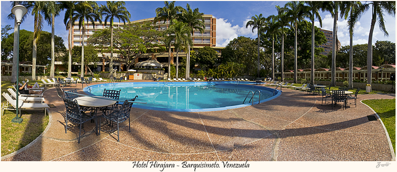

El Observatorio Astronómico Nacional de Llano del Hato1 comúnmente referido como Astrofísico de Mérida es un observatorio astronómico ubicado en los predios de la población de Apartaderos del estado Mérida en Venezuela a una altura de 3.600 msnm convirtiéndolo en uno de los observatorios enclavados a mayor altura del mundo. El observatorio es administrado por el Centro de Investigaciones de Astronomía quien es además, el ente encargado de realizar los estudios en el mismo. |

Según se conoce, el precursor original del castillo de san Ignacio fue el empresario Ignacio Castrogiovanni, quien según la historia dice que desde que era un niño soñaba con tener un castillo propio, así que puso en marcha lo que fue su sueño de la niñez, una vez que tenía las posibilidades económicas, sin embargo, no fue sino hasta el año 1990 que por manos de Lidio Piva se finalizó la construcción de la obra. |

El Hotel Jirahara fue creado en 1974 por el arquitecto Walter James Alcock y ganó el Premio Nacional de Arquitectura en 1987. El vocablo "Jirahara" se usaba para designar a unas hormigas grandes, rojizas y letales. Luego fue adoptado por la tribu indígena autóctona de Nirgua, estado Yaracuy, tierras donde abundaban dichos insectos. Jirahara pasó a ser sinónimo de valentía. |